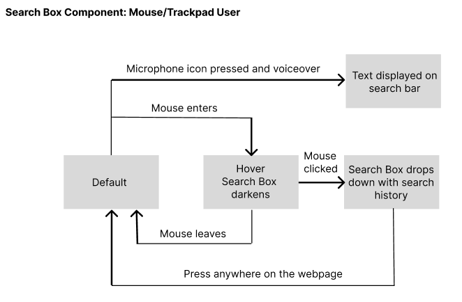

Part 3: State Model & Component Redesign
Based on these insights, we redesigned the search bar to enhance accessibility. I will be focusing on the redesign of the search bar from the US Department of State website. In order to do so, we need to analyze its component from a state model perspective.
Current State Model
Search Box Keyboard State Model for the US Department of State website does not exist since pressing tab completely skips over the component.
- Original website displays a small search icon and when clicked pops down a disproportionately large search bar across the entire page underneath.
- There is some temporal mismatch/flickering between the initial state and the active/clicked state.
Revised State Model


- I will improve this by converting the search icon into a full search bar and eliminating the temporal mismatch/flickering.
- Default State: Search box is always visible.
- Hovered State: Subtle shadow effect.
- Active State: Cursor blinks, suggested results appear.
- Exit State: Clicking outside collapses the search box.
Impact on Key Usability Factors
| Learnability | Memorability | Efficiency | Accessibility |
|---|---|---|---|
| Users can immediately see that the search bar is available without needing to hover or click on an icon. | The search box is always present, reducing the need for users to recall hidden UI elements. | Eliminates one more step users need to press in order to get to the search box or find a close button. Additionally, clicking anywhere outside the bar exits the mode. | Keyboard users can now navigate to the search bar using the Tab key. Focus order is incorporated. |